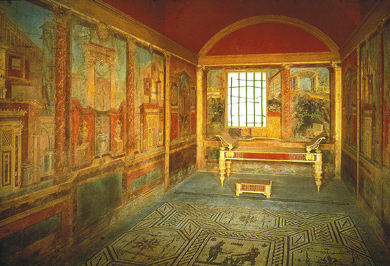

Indiana University
FINA A214
Art and Life in Ancient Rome
Fall, 2005
MW
1-2:15
Fine
Arts 010
Section
# 26682
Dr.
Deborah Deliyannis
Office: Ballantine
708
Office
hours: Thurs.
2:30-4:00
Phone:
855-3431
Email: ddeliyan@indiana.edu
Description
During the Roman
imperial
period, architects and artists produced a wide range of buildings,
sculpture,
paintings, pottery, metalwork, carved gems and jewelry, coins and
medallions,
and textiles. We now categorize many of these objects as "works of
art" and view them in the austere galleries of the world's art
museums. In antiquity, however,
these objects were displayed in different public and private settings
where
they fulfilled a variety of functions: temples and cult statues were
erected to
honor the gods; civic buildings and statues were set up to serve the
administrative needs of the government and to promote the political
agenda of
the ruling power; domestic decor was purchased to affirm the status and
good taste
of the homeowner; and funerary monuments were produced to commemorate
the
dead.
This course will
examine
Roman art within the context of daily life, addressing questions about
how art
objects were used, where they were displayed, and who would have seen
them. We will also explore how
works of art can be used as evidence to help us reconstruct the daily
activities, societal roles, and beliefs of the Roman people. The course is
organized thematically
around different spheres of Roman life, including politics, religion,
business
and commerce, spectacle and entertainment, domestic life, and the lives
of
women and children.
Books and
resources
The following
books are
available for purchase in the Fine Arts Bookstore, located in the Fine
Arts
Building:
Eve
D'Ambra, Roman Art. (Cambridge, 1998).
Jerome
J. Pollitt, The
Art of Rome C. 753 B. C.- A. D. 337: Sources and Documents (Cambridge, 1983).
A few additional
required
readings are available online or in e-reserves, as noted on your
syllabus. The e-reserves password is
"theater".
Assigned
readings for each week should be completed on the MONDAY of each week. It is
likely that we will use readings
for each week in small-group discussions during that week.
If it seems that people are not doing the
readings, pop-quizzes may have to be instituted.
Note: an online copy
of this syllabus can be
found at http://www.indiana.edu/~dmdhist.
Powerpoints will be posted on Oncourse for this class, under
"Resources".
Requirements
Attendance
10%
3
short papers (15% each)
45%
midterm
exam
18%
final
exam
27%
Attendance will
be taken in
class every day. If you have an
excusable absence, please e-mail me to let me know so that you are
marked
"excused" (documentation will usually be required).
You will be granted two
"free" absences (i.e. you can miss 2 classes without it counting
against you).
The
midterm and final exam will consist of short answer questions,
definition of
terms, and short essays based on slide comparisons.
The images will be selected from objects that have been
discussed in class and appear on the course web page.
You will not be required to memorize labels for these
images, but you will be expected to discuss them intelligently. The
powerpoint presentations from class
will be made available on the Oncourse web page for this class, under
"Resources".
Three
short papers are required; instructions for each can be found at the
end of the
syllabus. For all written work you
are required to include a bibliography of books and electronic
resources
consulted and to use footnotes or endnotes where appropriate. Plagiarism is
a serious offense that
will result in automatic failure for the course, and possibly more
serious
penalties at the university level.
Papers
are due in class
on the
day that they are due. Any
time after class will be considered late.
Late papers will be marked down one letter grade for each day
that they
are late.
A
NOTE ON COMPLETING COURSEWORK:
Excuses will only be given if you can provide documentation of a
legitimate excuse (i.e. a note from a doctor). If
you fall behind in this class, DO NOT WAIT UNTIL THE END
OF THE SEMESTER to discuss matters with me. University
regulations state that you are not allowed to
take an incomplete in a class if you are failing the class.
Tentative
Schedule
Introduction
Aug.
29 Introduction:
art
and life
Aug.
31
Sources and materials
Pollitt,
pp. 66-74 (Cicero, Verr.)
Sept.
5
Pompeii,
Herculaneum, and Ostia
Roman public art and
architecture
Sept.
7 Rome
and the empire
D'Ambra,
pp. 9-37
Sept.
12
The emperors
Sept.
14
The social order:
identity, status and class
FIRST
PAPER (Coins) DUE in class on Sept. 14
D'Ambra,
pp. 92-112, 39-57, 60-70,
Pollitt,
pp. 20-22 (Portrait Statues), 53 (Polybios), 104-106 (Suetonius), 115
(Pliny
XXXV, 26-28), 154 (Pliny XXXVI,101-102), 169 (Pausanias, Dio Cassius)
Sept.
19
Rome in the Movies
Sept.
21
The military and its
monuments
D'Ambra,
pp. 80-91
Pollitt,
pp. 24-25 (Triumphs and Plunder), 159 (Josephus)
Sept.
26
The Roman city
Sept.
28
Theaters and theatrical
events
D'Ambra,
pp. 59-80
H.
Dodge, "Amusing the Masses,"in Life, Death, and Entertainment in
the Roman Empire, eds. D.
S. Potter
and D. J. Mattingly (Ann Arbor, 1999), read pp. 208-224 and pp. 236-243
(on e-reserve)
Vitrivius,
De Architectura, Book 5, chs.
1, 2, 3,
6, and 9
Oct.
3
Athletic venues and events
Oct.
5
The spectacles in the
amphitheater
H.
Dodge, "Amusing the Masses," read pp. 224-236, 243-255
(on e-reserve)
Pollitt,
p. 146-7 (Pliny XXXV, 51-52), 158 (Suetonius; Martial)
Oct.
10
Bathing and
public baths
Oct.
12
Decoration of the
baths
SECOND
PAPER (city) DUE in class on Oct. 12
Vitruvius,
De Architectura, Book 5 ch. 10
Oct.
17
Roman gods and
their temples
Oct.
29
Synchretistic
religious practices
J.
Rives, "Religion in the Roman World." In Experiencing Rome, ed. Janet Huskinson, (London, 2000)
245-74 (on e-reserve)
Pollitt,
pp. 8-9 (Pliny, Plutarch, Livy), 121-123 (Vitruvius)
Oct.
24
MIDTERM EXAM
Oct.
26
Mystery
religions
Roman private life and art
Oct.
31
Religion in the
home
Nov.
2
Town houses
D'Ambra,
pp. 126-145
Vitruvius,
De Architectura, Book 6 chs.
3-5
Nov. 7
Villas
Nov.
9
The decoration of the Roman
house I
Pollitt,
p. 54 (Pliny), 115-116 (Pliny XXXV, 116-17), 127-129 (Vitruvius, Book
VIII, 5),
171-174 (Pliny, Epistulae)
Nov.
14
The decoration of the
Roman house II
Nov.
16
The decoration of the
Roman house III
Pollitt,
pp. 76-77 (Cicero, ad Atticum),
226 (Philostratos the Younger)
Nov.
21
The art of eating
Nov.
23
NO CLASS -
Thanksgiving
Petronius,
selections from the Satyricon, chs. 29-35
Nov.
28
The Roman tomb
Nov.
30
Art and death
PAPER
3 (museum) DUE in class on Nov. 30
D'Ambra,
pp. 112-125
Pollitt,
pp. 192-193 (Dio Cassius)
Dec.
5
Christian vs. pagan in the
Late Roman Empire
Dec.
7
The "Fall of
Rome"?
D'Ambra,
pp. 147-167
Pollitt,
pp. 212-213 (Lactantius)
FINAL EXAM: Monday,
December 12, 12:30-2:30 p.m.,
Fine Arts 010
This paper
focuses on the
imperial imagery found on coins.
To complete it, you should use one of the following two online
databases
which contain images of many coins:
http://artemis.austincollege.edu/acad/cml/rcape/vcrc/catalog-sidebar.html
http://data.numismatics.org/cgi-bin/objsearch?header=ref
for the second
one, you
should select Department: Roman; Format: images
only; Keyword: [name
of whatever emperor or empress
you want]
Select an
emperor or empress
for whom you can identify at least 8 different coins.
Good choices are Augustus, Nero, Hadrian, Faustina the Elder
(wife of Antoninus Pius), Faustina the Younger (wife of Marcus
Aurelius),
Marcus Aurelius, Septimius Severus, Julia Domna (wife of Septimius
Severus),
Caracalla, and Constantine, but you are not confined to these.
Write a 2-3 page
paper in
which you describe, in an organized fashion, what is found on these 8
coins (if
your emperor has more than 8, choose 8 to discuss), both in terms of
portraiture and in terms of what is on the reverse.
For portraiture,
be sure to
mention whether the image of the emperor/empress changes over time or
in some
other way, or remains the same.
For symbols on the reverse, discuss whether they all promote the
same
symbolic message for the empire, or whether they differ and in what way.
IF YOU DO NOT
UNDERSTAND
TERMS, ABBREVIATIONS, LATIN WORDS, etc. look them up.
Be sure to
include
information about the material and denomination of each coin. Tell which
coin you thought was the
most interesting, and why.
If you use
information from
these or any other websites or books, you must cite it correctly in
footnotes. If you do not do so,
you are liable to be accused of plagiarism, which would automatically
lead to a
failing grade for the class.
Please note that 2-3 pages
refers to pages
that use
12-point font, double-spaced, with 1 inch margins all around.
For
this paper,
you will analyze the layout of a Roman city, based on groundplans found
on the
web.
Go
to the
website for plans of Ostia Antica:
http://www.ostia-antica.org/map/plan3.htm
Select
one
regio
(but not
regio II),
and then
within the regio
select one of the blocks that is pretty much fully excavated
(i.e. the
square/rectangle is full). If you
have any questions about what to choose, ask the instructor!
Study
your block
carefully, looking at the color-key.
Write a 2-3 page paper describing what facilities are found in
your
block, how much space each kind takes up, and how they are organized
relative
to one another. Do you think you
would like to live in this section of the city?
Note
that if you
move your mouse over the block and hold the cursor in place, the exact
building
will be identified. If you click directly on the block you get a page
with
further information and pictures. If
you quote any of this information in your paper, please footnote it
appropriately. Finally, at the
bottom of each regio's
page there are links to larger views of each block.
You
are expected
to understand all the terms for different sorts of buildings; if you do
not, look
them up.
Please note that 2-3 pages
refers to pages
that use
12-point font, double-spaced, with 1 inch margins all around.
This assignment
has two main
objectives. One is to have you
learn to look very carefully at real objects (all objects are in the IU
Art
Museum). The other is to have you
learn to use words to describe what you see when
you
look at the objects, and what it means in the bigger context of Roman
art.
Select one of
the following
objects that can be found in the IU Art Museum:
Balsamarium, Bust of Antinuous, 2nd-3rd c.
AD, Bronze
Bronze mirror with libation at the shrine of Diana, Burton Y. Berry
Collection, 62.117.114
Sarcophagus Panel, Roman, ca. AD 220, Marble, 66.27
Bowl with molded decoration, clay (Arretine red-gloss ware), 79.9.6
These objects
are all objects that have a particular function and also something
depicted on them.
In 2-3 pages, describe the relationship
of the decoration to the object.
What is the function of the decoration? What
impression does it create? What does this
object tell you about the way the Romans
experienced art in their lives? Do
you think this object was expensive?
Why?? (think carefully about this as you justify your answer,
and
explain exactly what you mean, using specific words to let me know how
you
arrive at this conclusion).
If you don't know the meaning of all the terms on the label, you should
look them up. Youl are welcome to do additional research to
provide you with more information about your object, but do provide me
with a list of all the sources that you consulted.
If you feel that you need some
help with
this sort of
writing, I encourage you to consult Sylvan Barnet's A short guide
to writing
about art, which is on
reserve in
the Fine Arts Library.
Note that the IU Art Museum is
open
Tuesday-Saturday
10-5, Sunday 12-5, and is closed Monday; you must plan your work around
this. Also please note that only
pencils are allowed in the gallery; museum staff have pencils that you
can
borrow if you only have pens.
Please note that 2-3 pages
refers to pages
that use
12-point font, double-spaced, with 1 inch margins all around.